
Apisense · Zestaw startowyApisense · Starter kit
Instrukcja
montażu
Assembly
instruction
Od rozpakowania kartonu do pierwszego odczytu z ula. Siedem kroków, wszystkie ekrany aplikacji i montaż każdego urządzenia w pasiece. From opening the box to your first hive reading. Seven steps, every app screen and the mounting of each device in the apiary.
- 7 kroków7 steps
- ok. 30 minutapprox. 30 minutes
- Apisense Pro AIApisense Pro AI
ZestawThe kit
Co znajdziesz w pudełkuWhat's in the box
Jeden Hub obsługuje całą pasiekę. Scale trafia pod pierwszy ul, a każdy ul dostaje własny VitalSensor i ColonyLink. A single Hub serves the whole apiary. The Scale goes under the first hive, and every hive gets its own VitalSensor and ColonyLink.
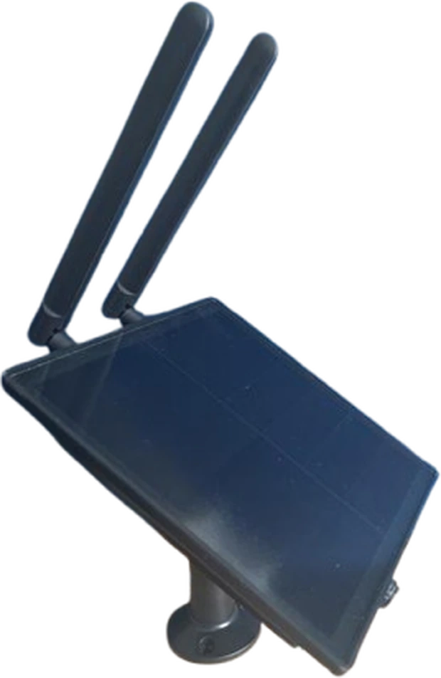
1 × Hub
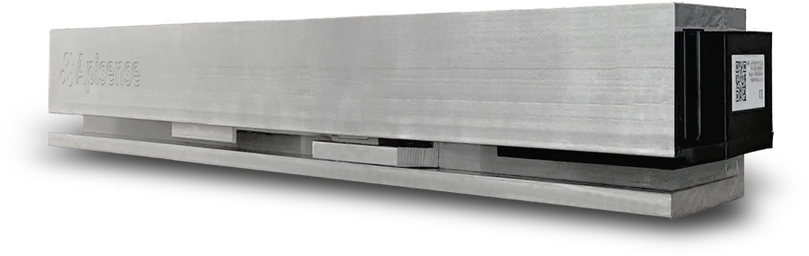
1 × Scale
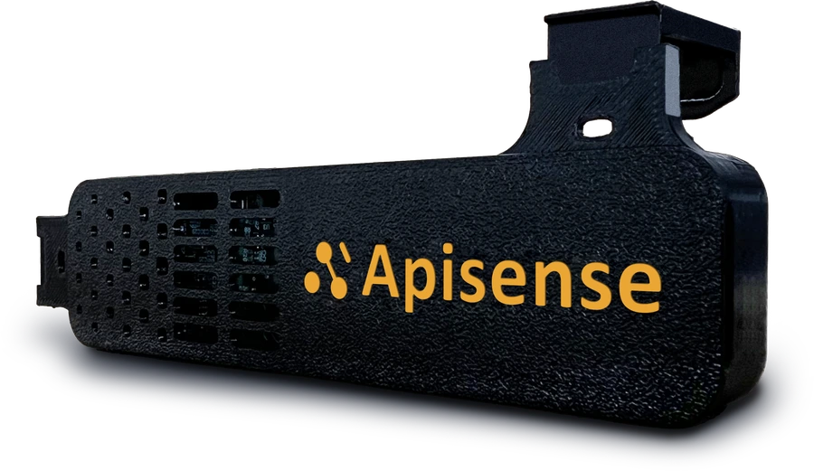
1 × VitalSensor

1 × ColonyLink
Plus elementy montażowe: uchwyt aparatowy do Huba, drewniana kantówka do Scale i uchwyty montażowe do ramki dla VitalSensora. Montaż nie wymaga wymiany uli ani ingerencji w ich budowę. Plus the mounting parts: a camera mount for the Hub, a wooden spacer bar for the Scale and frame brackets for the VitalSensor. Mounting requires no hive replacement or modification.
Krok 01Step 01
Pobierz aplikacjęDownload the app
Cały zestaw konfigurujesz z telefonu. Zeskanuj kod QR aparatem albo wyszukaj Apisense Pro AI w App Store lub Google Play. The whole kit is configured from your phone. Scan the QR code with your camera or search for Apisense Pro AI in the App Store or Google Play.
- iOSGórny kod QR — App StoreTop QR code — App Store
- AndroidDolny kod QR — Google PlayBottom QR code — Google Play
- wwwMożesz też pracować w przeglądarce: app.apisense.aiYou can also work in a browser: app.apisense.ai
Krok 02Step 02
Stwórz kontoCreate an account
Podaj nazwę użytkownika, adres e-mail i numer telefonu, a następnie naciśnij Next. Możesz też zarejestrować się kontem Google lub Apple. Enter a username, e-mail address and mobile phone, then tap Next. You can also sign up with your Google or Apple account.
- UsernameNazwa widoczna w aplikacjiName shown inside the app
- EmailSłuży do logowania i powiadomieńUsed for login and notifications
- PhoneNumer kontaktowy do kontaContact number for the account
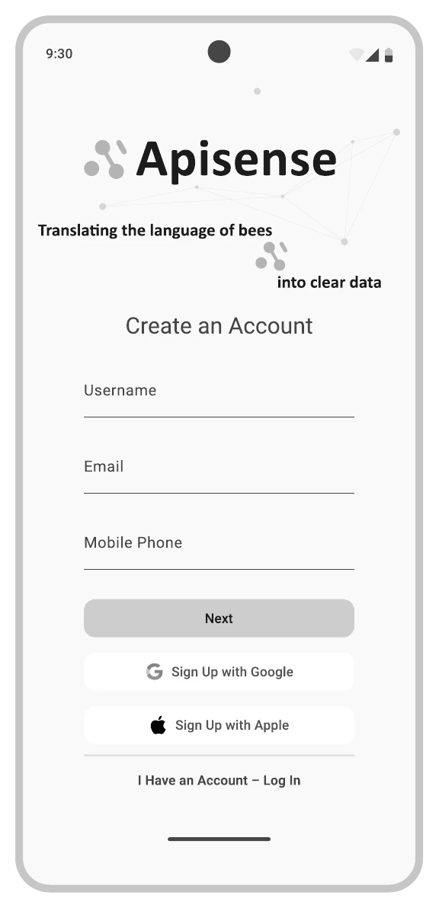
Krok 03 · 03.1 – 03.2Step 03 · 03.1 – 03.2
Dodaj pasiekęAdd apiary
Pasieka to miejsce, w którym stoją ule i jeden Hub. Zaczynasz od nadania jej nazwy. An apiary is the place where your hives and one Hub live. Start by giving it a name.
- 03.1Na ekranie powitalnym naciśnij Add apiary.On the welcome screen tap Add apiary.
- 03.2Wpisz nazwę pasieki i jej skrót (maks. 3 znaki), a potem dotknij ikony skanera przy polu Hub.Enter the apiary name and its abbreviation (max. 3 characters), then tap the scanner icon next to the Hub field.
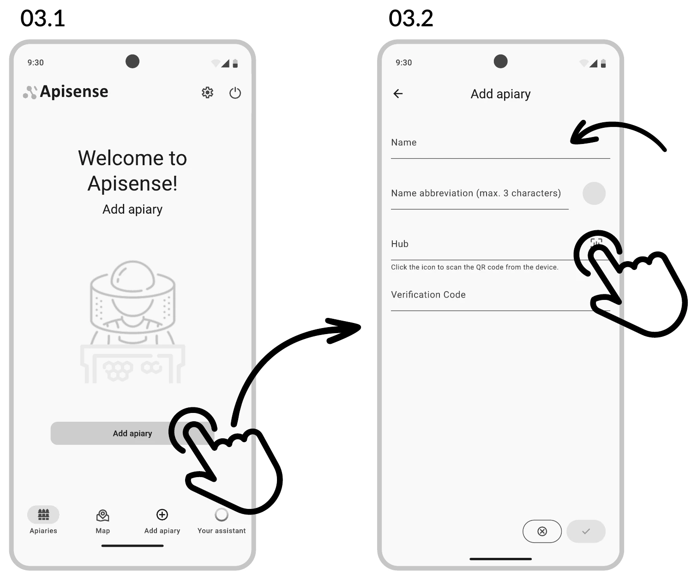
Krok 03 · 03.3Step 03 · 03.3
Zeskanuj kod QR HubaScan the Hub QR code
Naklejka z kodem QR znajduje się na obudowie Huba, od strony panelu. Ustaw ją w ramce skanera — aplikacja odczyta kod sama i wypełni pola Hub oraz Verification Code. The QR sticker sits on the Hub housing, on the panel side. Line it up inside the scanner frame — the app reads it and fills in the Hub and Verification Code fields for you.
Wskazówka: jeśli kod się nie skanuje, przetrzyj go i zapewnij równomierne światło — bez odblasku. Tip: if the code will not scan, wipe it clean and use even light — avoid glare.
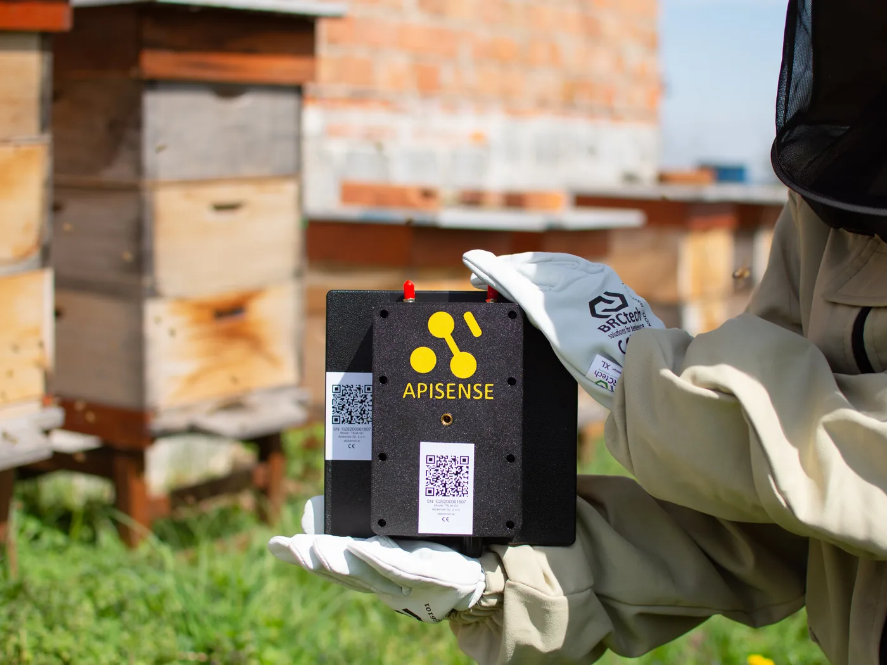
Krok 03 · 03.4 – 03.6Step 03 · 03.4 – 03.6
Pasieka jest gotowaYour apiary is ready
Po zeskanowaniu kodu aplikacja uzupełnia dane Huba za Ciebie — nic nie przepisujesz ręcznie. After the scan the app fills in the Hub details for you — nothing has to be typed by hand.
- 03.4Skaner odczytuje kod QR z Huba.The scanner reads the QR code from the Hub.
- 03.5Pola Hub i Verification Code wypełniają się automatycznie — zatwierdź formularz.The Hub and Verification Code fields fill in automatically — confirm the form.
- 03.6Pasieka pojawia się na ekranie głównym razem z pogodą.The apiary appears on the home screen along with the weather.
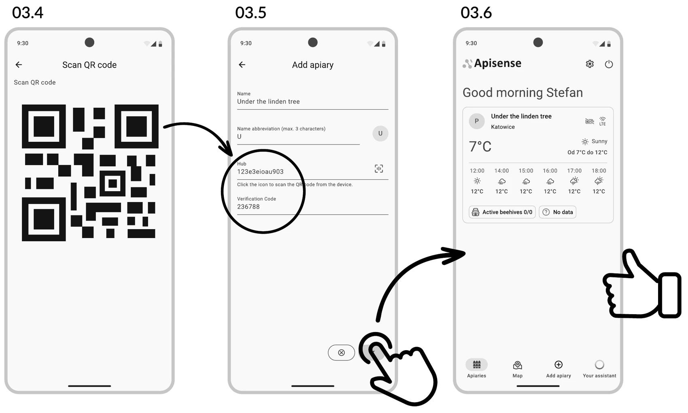
Krok 04 · 04.1 – 04.3Step 04 · 04.1 – 04.3
Dodaj ul: Scale i VitalSensorAdd hive: Scale & VitalSensor
Pierwszy ul dostaje komplet: Scale i VitalSensor. Oba urządzenia dodajesz w jednym formularzu. The first hive gets the full set: a Scale and a VitalSensor. You add both devices in a single form.
- 04.1Na ekranie głównym otwórz swoją pasiekę.Open your apiary from the home screen.
- 04.2Naciśnij Add beehive.Tap Add beehive.
- 04.3Dotknij ikony skanera przy polu Scale.Tap the scanner icon next to the Scale field.
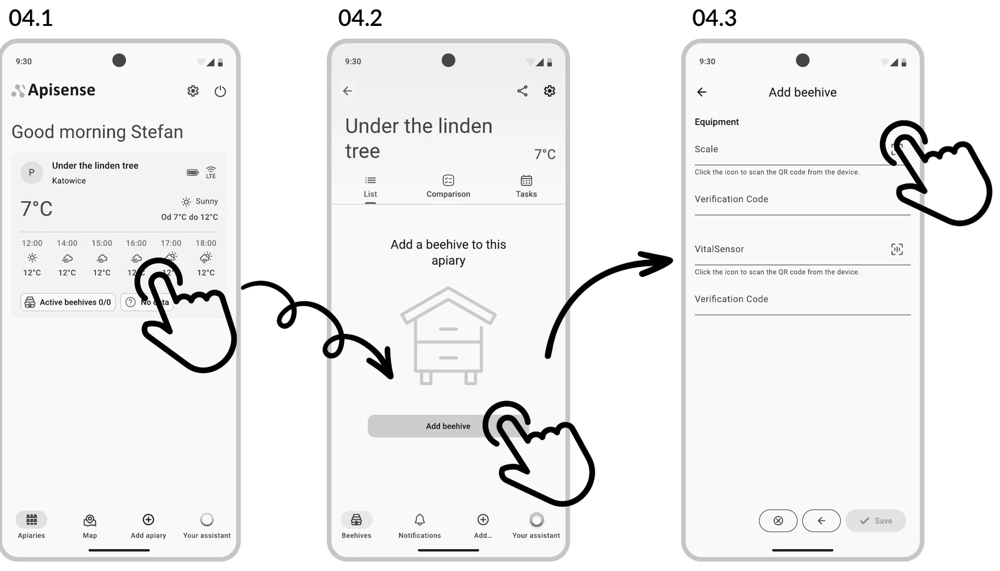
Krok 04 · 04.4Step 04 · 04.4
Zeskanuj kod QR ScaleScan the Scale QR code
Naklejka z kodem QR jest na czole belki pomiarowej — tej z elektroniką i komorą baterii. Drewniana kantówka nie ma kodu. The QR sticker is on the end face of the measuring beam — the one with the electronics and the battery compartment. The wooden spacer bar has no code.
Zeskanuj kod zanim wsuniesz belkę pod ul — później dostęp do niego będzie utrudniony. Scan the code before you slide the beam under the hive — it is harder to reach afterwards.
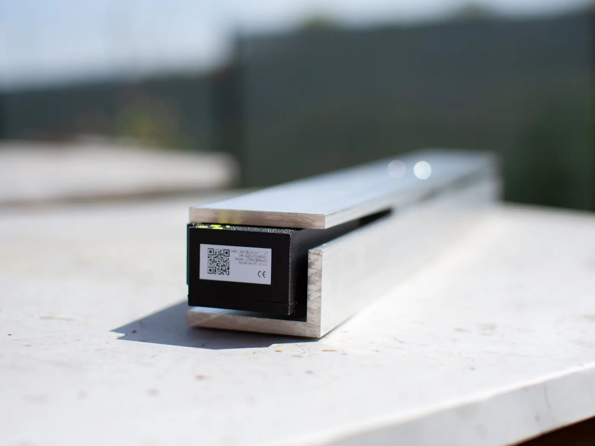
Krok 04 · 04.5 – 04.6Step 04 · 04.5 – 04.6
Scale wpisana do ulaScale linked to the hive
Numer urządzenia i kod weryfikacyjny wpisują się same. Teraz przejdź do drugiej pozycji formularza. The device ID and verification code fill in on their own. Now move on to the second field of the form.
- 04.5Skaner odczytuje kod QR ze Scale.The scanner reads the Scale QR code.
- 04.6Pola Scale i Verification Code są uzupełnione — dotknij skanera przy polu VitalSensor.The Scale and Verification Code fields are filled — tap the scanner next to the VitalSensor field.
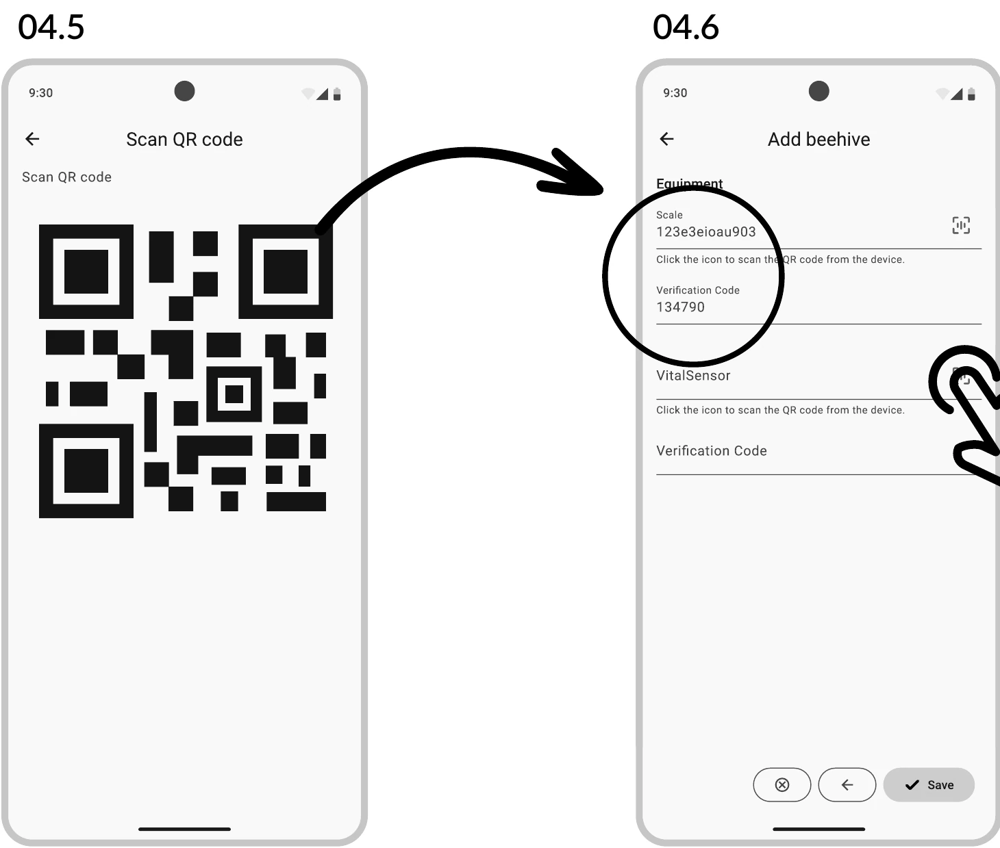
Krok 04 · 04.7Step 04 · 04.7
Zeskanuj kod QR VitalSensoraScan the VitalSensor QR code
Naklejka z kodem QR jest na krótszym boku obudowy. Zeskanuj ją przed zamontowaniem czujnika na ramce — po włożeniu ramki do ula kod ma być widoczny od góry. The QR sticker is on the short side of the housing. Scan it before you mount the sensor on the frame — once the frame is in the hive the code must stay visible from above.
- 1 / 1Każdy VitalSensor ma własny, unikalny kod.Every VitalSensor has its own unique code.
- 04.7Zeskanuj kod czujnika, który trafi do tego ula.Scan the code of the sensor that will go into this hive.
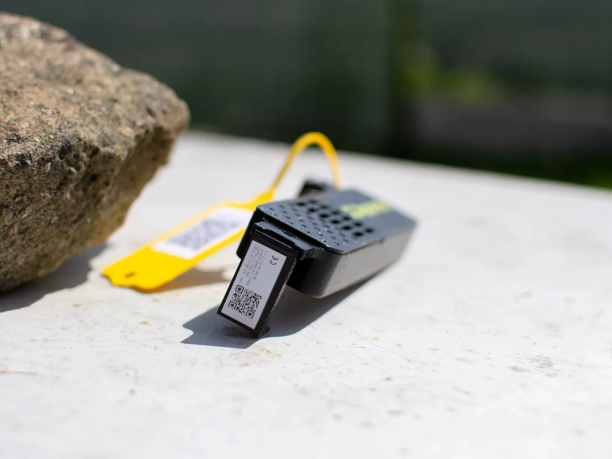
Krok 04 · 04.8 – 04.10Step 04 · 04.8 – 04.10
Pierwszy ul zapisanyThe first hive is saved
Po zapisaniu formularza ul pojawia się w pasiece. Zeskanuj też kod QR z ColonyLink, aby powiązać z ulem jego fizyczny identyfikator. Once you save the form the hive appears in the apiary. Scan the ColonyLink QR code as well, to link the hive with its physical identifier.
- 04.8Skaner odczytuje kod QR VitalSensora.The scanner reads the VitalSensor QR code.
- 04.9Formularz jest kompletny — naciśnij Save.The form is complete — tap Save.
- 04.10Ul widnieje na ekranie głównym. Odczyty pojawią się po pierwszej synchronizacji.The hive shows on the home screen. Readings appear after the first sync.
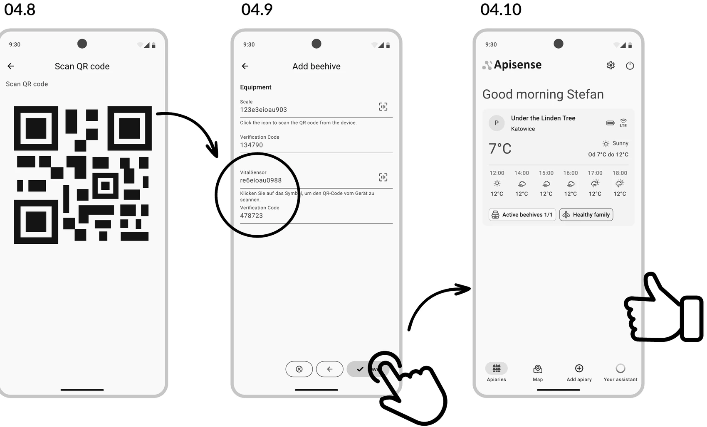
Krok 05 · 05.1 – 05.3Step 05 · 05.1 – 05.3
Dodaj kolejny ulAdd another hive
Kolejne ule dodajesz z samym VitalSensorem — Scale zostaje pod pierwszym ulem. Pole Scale zostaw puste. Further hives are added with a VitalSensor only — the Scale stays under the first hive. Leave the Scale field empty.
- 05.1Otwórz pasiekę z ekranu głównego.Open the apiary from the home screen.
- 05.2Naciśnij + i wybierz Beehive.Tap + and choose Beehive.
- 05.3Dotknij ikony skanera przy polu VitalSensor.Tap the scanner icon next to the VitalSensor field.
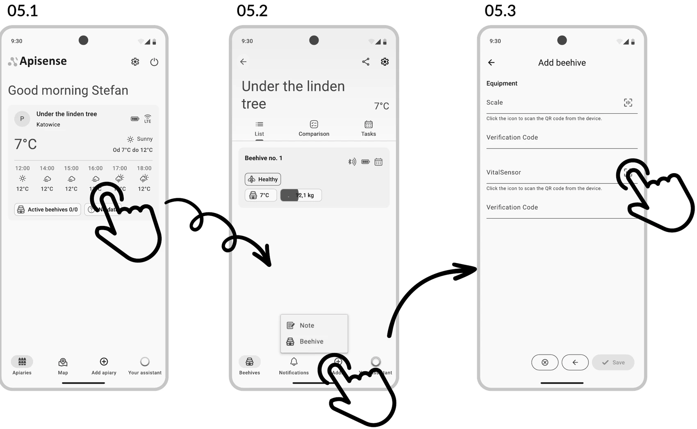
Krok 05 · 05.4 – 05.7Step 05 · 05.4 – 05.7
Kolejny ul w pasieceAnother hive in the apiary
Formularz zapisuje się tak samo jak przy pierwszym ulu — bez pola Scale. The form saves exactly like the first hive — just without the Scale field.
- 05.4 – 05.5Skaner odczytuje kod QR kolejnego czujnika.The scanner reads the next sensor's QR code.
- 05.6Pola VitalSensor i Verification Code są gotowe — naciśnij Save.The VitalSensor and Verification Code fields are ready — tap Save.
- 05.7Kolejny ul widnieje w pasiece. Powtórz krok 05 dla każdego następnego ula.The next hive shows in the apiary. Repeat step 05 for every further hive.
Krok 06Step 06
Uruchom urządzenia i poczekaj na danePower up and wait for data
Urządzenia uruchamiasz przed montażem w pasiece — dzięki temu wiesz, że wszystko działa, zanim wejdziesz między ule. Power the devices up before mounting them — that way you know everything works before you go out among the hives.
- HubWystaw na słońce albo podłącz przewód USB-C do kompatybilnego źródła zasilania.Put it in the sun or connect a USB-C cable to a compatible power source.
- ScaleWłóż 2 baterie AA i sprawdź, czy zaświeciła się dioda.Insert 2 AA batteries and check that the LED lights up.
- VitalSensorWłóż 2 baterie AA i sprawdź diodę.Insert 2 AA batteries and check the LED.
- ~2 hPo dwóch godzinach sprawdź pierwsze odczyty w aplikacji — status Brak danych zmieni się na aktualny.After two hours check the first readings in the app — the No data status turns into a live one.
Krok 07 · MontażStep 07 · Mounting
Zamontuj HubMount the Hub
Hub zasila panel fotowoltaiczny, więc decyduje o nim słońce, nie bliskość ula. Do montażu użyj uchwytu aparatowego z zestawu. The Hub runs on a photovoltaic panel, so sunlight decides where it goes — not proximity to a hive. Use the camera mount from the kit.
- 1–2 mNad ziemią — niżej panel może nie zebrać dość światła, zwłaszcza zimą.Above the ground — any lower and the panel may not gather enough light, especially in winter.
- 30–50°Nachylenie względem poziomu (min. 20°), panelem w stronę słońca, bez zacienienia.Tilt from horizontal (min. 20°), panel facing the sun, never shaded.
- ≤ 35 mOd najdalszego ula z VitalSensorem lub Scale — to zasięg BLE.From the furthest hive with a VitalSensor or Scale — that is the BLE range.
- AntenySkierowane pionowo do góry — BLE i LTE mają różne złącza, nie da się ich pomylić.Pointing vertically upwards — BLE and LTE use different connectors and cannot be swapped.
Nie montuj Huba do metalu — zakłóca BLE i LTE. Słupek, drzewo lub drewniana konstrukcja są w porządku. Do not mount the Hub on metal — it disturbs BLE and LTE. A post, a tree or a wooden structure is fine.

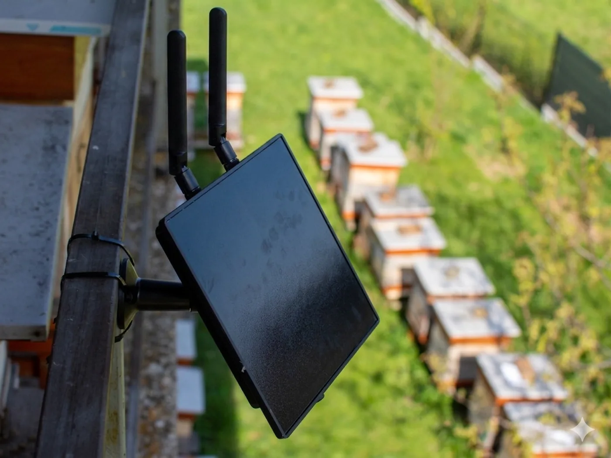
Krok 07 · MontażStep 07 · Mounting
Ustaw Scale pod ulemPlace the Scale under the hive
Scale i drewniana kantówka tworzą jedną konstrukcję nośną. Wypoziomowanie i orientacja są kluczowe dla dokładności pomiaru. The Scale and the wooden spacer bar form one supporting structure. Levelling and orientation are critical for measurement accuracy.
- 01Ustaw uruchomioną Scale na stabilnym, równym podłożu, prostopadle do ramek w ulu.Put the powered Scale on firm, level ground, perpendicular to the frames in the hive.
- 02Ułóż drewnianą kantówkę równolegle do Scale, w takiej odległości, żeby ciężar ula rozłożył się równomiernie.Lay the wooden bar parallel to the Scale, spaced so the hive weight is spread evenly.
- 03Postaw ul na konstrukcji i sprawdź, że obciążenie nadal rozkłada się równo.Set the hive on the structure and check the load is still spread evenly.
- ≤ 35 mOd Huba, bez przeszkód tłumiących sygnał BLE.From the Hub, with nothing blocking the BLE signal.

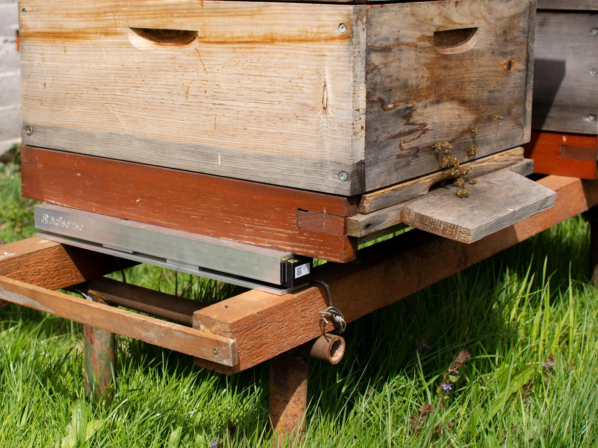
Krok 07 · MontażStep 07 · Mounting
Zamontuj VitalSensor w uluMount the VitalSensor in the hive
Czujnik montujesz bezinwazyjnie na ramce, przy użyciu uchwytów z zestawu — bez trwałych zmian w ulu i bez zakłócania pracy rodziny. The sensor mounts non-invasively on a frame using the brackets from the kit — no permanent changes to the hive and no disturbance to the colony.
- 01Osadź uruchomiony VitalSensor na centralnej ramce (w kłębie), stabilnie, tak żeby się nie przemieszczał.Fix the powered VitalSensor to the central frame (in the cluster), firmly enough that it cannot shift.
- 02Zamontuj go pionowo — naklejka z kodem QR ma być widoczna od góry po włożeniu ramki.Mount it vertically — the QR sticker must stay visible from above once the frame is in.
- 03Włóż ramkę w środkową część korpusu gniazdowego, tak żeby nie zakłócać wentylacji.Slide the frame into the middle of the brood body, without obstructing ventilation.
- ≤ 35 mOd Huba — zasięg BLE.From the Hub — BLE range.

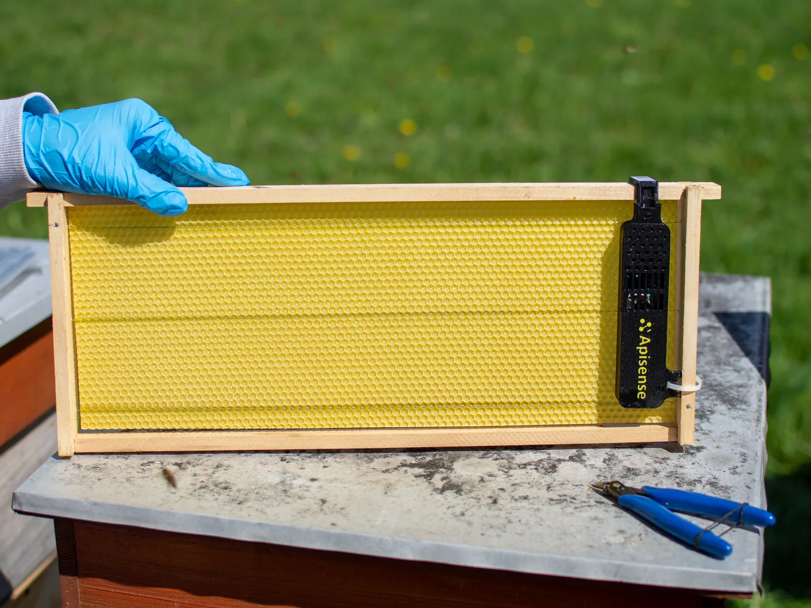
Krok 07 · MontażStep 07 · Mounting
Umieść ColonyLink na uluAttach the ColonyLink
ColonyLink to fizyczny identyfikator ula z kodem QR i tagiem NFC. Zeskanowanie kodu albo przyłożenie telefonu otwiera dane właściwego ula — też w rękawicach i w pełnym słońcu. The ColonyLink is the hive's physical identifier, with a QR code and an NFC tag. Scanning it or tapping your phone against it opens the right hive — even with gloves on and in full sun.
- 01Podczas tworzenia ula zeskanuj kod QR z ColonyLink, aby powiązać go z tym ulem.While creating the hive, scan the ColonyLink QR code to link it to that hive.
- 02Umieść ColonyLink na froncie ula — płaskie, czyste i suche miejsce, dobrze widoczne podczas pracy.Place the ColonyLink on the hive front — a flat, clean, dry spot that stays easy to see while you work.
- Bez bateriiColonyLink nie wymaga zasilania, konfiguracji ani aktualizacji.The ColonyLink needs no power, no setup and no updates.
GotoweAll set
Ul nadaje.Your hive is on air.
Hub zbiera dane z czujników i wysyła je do aplikacji. Jeśli po kilku godzinach odczytów nadal brak — sprawdź baterie, zasięg i listę problemów w dokumentacji. The Hub collects sensor data and sends it to the app. If readings are still missing after a few hours, check the batteries, the range and the troubleshooting list in the documentation.
bee@apisense.ai Pełna instrukcja konfiguracjiFull configuration guide Rozwiązywanie problemówTroubleshooting Dokumentacja ApisenseApisense documentation